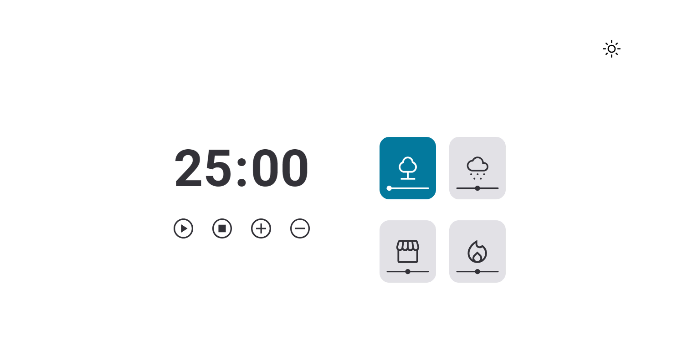
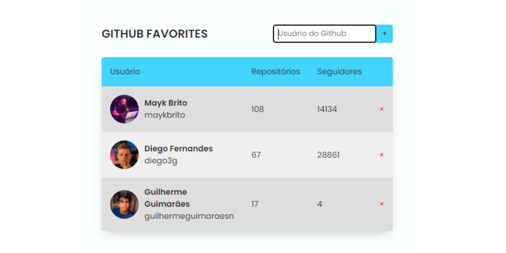

Bem Vindo!
Olá meu nome é Guilherme Guimarães, sou desenvolvedor de software e aqui você vai conhecer um pouco sobre mim e os meus projetos! :)
Sobre mim
Sou estudante de Sistemas de Informação e atuo como instrutor de tecnologia desde 2022. Durante esse
tempo, ministrei aulas de desenvolvimento web e robótica, além de participar de vários projetos
acadêmicos e cursos complementares. Essas experiências me proporcionaram conhecimentos em HTML5,
CSS3, JavaScript, React, Next.js, Node.js e TailwindCSS.
Tenho como objetivo colaborar em grandes projetos na área do desenvolvimento de software, para que eu possa crescer e ajudar outras pessoas a crescer profissionalmente e pessoalmente.
Sou apaixonado por aprender e acredito que a dedicação e a disciplina são fundamentais para alcançar
o melhor de nós mesmos e contribuir com os outros.
Estou sempre em busca de novos desafios.
Meus Projetos
Quiz da Programação
PROJETO PESSOALQuiz para testar os conhecimentos sobre a área da programação, com sistema de pontuação e com feedback para respostas corretas e incorretas.
Tecnologias:
Focus Timer
 PROJETO DE CURSOTemporizador para a hora dos seus estudos, com a opção de ajustar quantos minutos deseja para cada etapa, sons de fundo em quatro temas diferentes e opção de Dark Mode e Light Mode.
Tecnologias:
GitHub Favorites
 PROJETO DE CURSOApp para salvar e buscar os seus perfis favoritos do GitHub, mostrando número de seguidores e repositórios, com sistema de deletar e adicionar perfis.